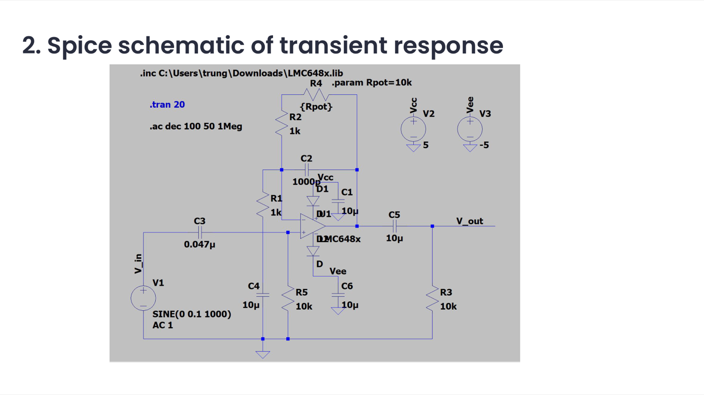
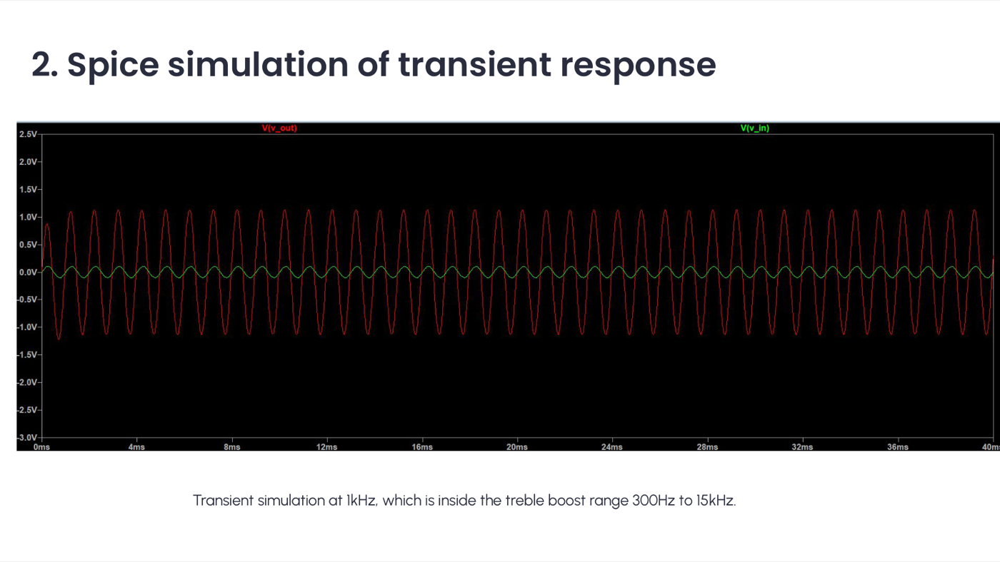
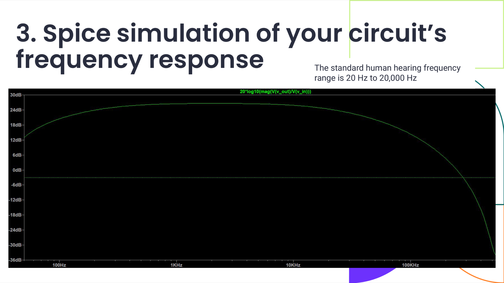
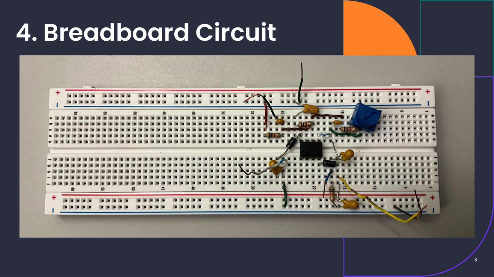
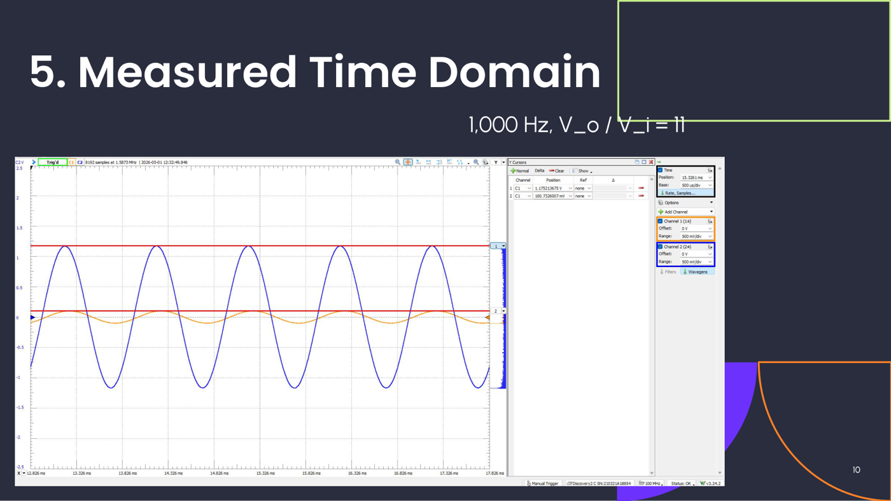
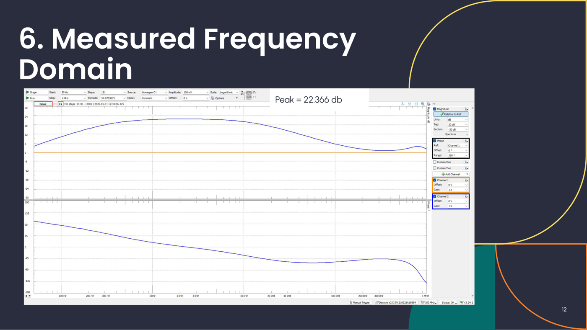

Treble Boost
Effects Box.
An op-amp guitar pedal that boosts mid/treble frequencies to drive an amp into a biting, distorted tone — hand-designed, SPICE-simulated, breadboarded, and measured on the bench.
Overview
This circuit sits between an electric guitar and its amplifier. It's a non-inverting op-amp gain stage combined with a high-pass and low-pass filter, so it works as a bandpass "treble boost": it attenuates bass, amplifies the 300 Hz–15 kHz range the guitar actually speaks in, and rolls off very high frequencies to keep AM-radio interference out. Driving that boosted signal into the amp's input pushes it into overdrive for a more pleasant distorted tone, with a 10k gain-select pot for how hard it hits.
Symbolic transfer function
A = 1 + (R2 + R4) / R1
HPF = jωR5C3 / (1 + jωR5C3)
LPF = 1 / (1 + jω(R2 + R4)C2)
Schematic & component values

SPICE simulation


Breadboard build

Measured results


Designed vs. simulated vs. measured
| Spec | Hand Calculation | SPICE Simulation | Measured |
|---|---|---|---|
| Peak gain | 21.6 dB | 26.59 dB | 22.366 dB |
| Lower cutoff f_L | 338.6 Hz | 184 Hz | 170 Hz |
| Upper cutoff f_H | 14.5 kHz | 24.93 kHz | 35 kHz |
| Gain at 100 Hz | < 10 | 10.52 | 3 |
| Gain at 1 kHz | ≥ 10 | 21.09 | 11 |
| Gain at 20 kHz | < 10 | 16.51 | 7 |
Differences between hand calculation, SPICE, and measurement are expected: the hand calc uses simplified first-order filter math, while real components carry tolerance error, and breadboard wiring adds parasitic loading the ideal model doesn't capture.